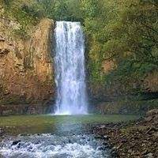

Pincipais Pontos turísticos
Santa
No dia 16 de setembro de 1957, Irati, na região central do estado, ganhou como presente de 50 anos um novo local para a população depositar as preces. Uma imagem de Nossa Senhora das Graças, de 22 metros de altura, instalada no topo de uma colina.
A posição, estratégica, permite que uma das representações de Maria de Nazaré seja vista de quase toda a cidade.

video da santa:
Parque Aquático
O Parque Aquático de Irati foi inaugurado em 1989, em uma área aproximada de 79.000m². Tem lago com peixes e patos, Pavilhão de Exposições usado para atividades culturais da cidade, quadras desportivas, pista de cooper/ciclismo, trenzinho, academia ao ar livre e playground para crianças.

video do parque:
Cachoeira do Pinho de Baixo
Localizada na comunidade do Pinho de Baixo, a 12 km do centro da cidade. É uma cachoeira artificial, com aproximadamente 16 metros de altura e área para banho. Foi construída pela Copel para gerar energia à Irati.
video da cachoeira: